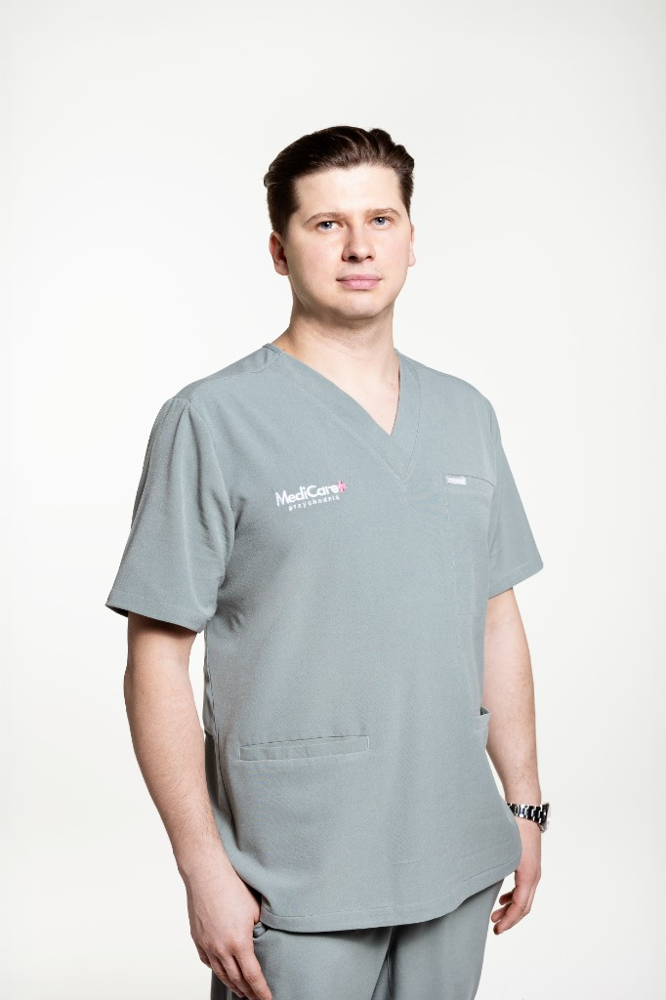

Poradnia Chirurgii Ogólnej i Proktologii
Kompleksowa diagnostyka i nowoczesne, małoinwazyjne leczenie. Konsultacje chirurgiczne, badania dermatoskopowe, bezbolesne usuwanie znamion oraz skuteczna pomoc w chorobach końcowego odcinka przewodu pokarmowego. Zabiegi wykonujemy bezpiecznie na miejscu.

Dr n. med. Piotr Kluska
specjalista chirurgii ogólnej, proktolog